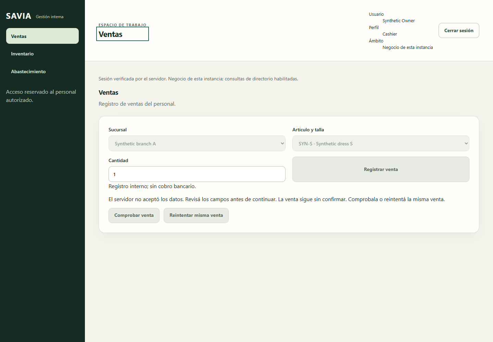

Tested. Still blocked for release.
NOT PRODUCTION READYReal SQL tests pass. One reproduced staff checkout defect and several unclosed validation gaps prevent a completion claim.
backend passes
Includes 67 real SQL; 2 not run
browser scenarios pass
One staff checkout defect
SQL databases before / after
Zero new databases left behind
Tony base 9befe15 plus existing uncommitted source changes. 2,377 source hashes verified unchanged. These results describe that local candidate; the evidence commit does not include the pre-existing product edits.
Coverage and gaps
| Layer | Result | Evidence boundary |
|---|
Next increment: finish the cashier sale path
- Fix the stale receipt 404 state that disables every sale control.
- Exercise the real browser → API → disposable SQL path.
- Prove one sale, one stock decrement, receipt reload and recovery after a lost response.
Keep session revocation and unknown pending-sale locks intact. This closes a known defect and connects the separately tested layers.
See the reproduced defect
A valid cashier has an old confirmed receipt reference, with no pending sale. When receipt lookup returns 404, the UI creates an empty pending operation. New sale, recovery and retry become disabled.

What still needs a real release check
Internal migration and backup/restore, controlled restart, unreconciled legacy assertions, symlink rejection on a capable runner, combined browser/API/SQL acceptance, required external providers and the declared production target.
What changed during validation
Two test harnesses and this evidence package. No product source correction. Dependency resolution and two browser assumptions were corrected, with original failures retained in the evidence history.